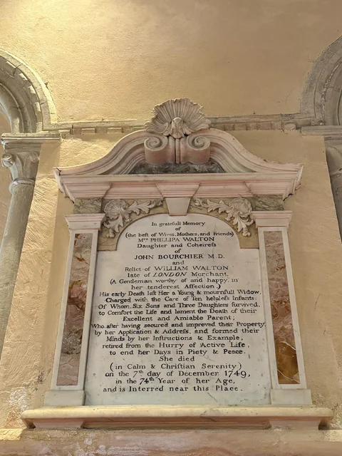
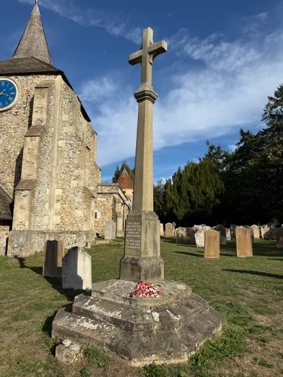

People & Families
Stories of notable people and parish families, including Philippa Walton.
Explore people and families
OUR PARISH
Christian worship has taken place at this site for more than a thousand years. The history of St Michael and All Angels is closely connected with the history of Mickleham itself.
A STORY ACROSS THE CENTURIES
Explore key moments in the church’s history, from its earliest traces to parish life today.
Open each period to discover more of the story.
Explore our history
Discover more about the rich history of our church and parish. Explore the topics below to read stories, view photographs and learn about the people and events that have shaped St Michael and All Angels.

Stories of notable people and parish families, including Philippa Walton.
Explore people and families
Discover the history of the church building, from its early traces to later changes.
Explore the buildingDiscover the stories behind the church’s historic memorials, monuments, brasses and tombs.
View the monuments
Find out about the parish’s war memorial and those it commemorates.
Explore wartime stories
Discover the churchyard, its memorials and the stories of those buried here.
Read the churchyard historyA collection for historical photographs, documents and other items from the parish archive.
Collection in preparationA collection for people, events and local history from our parish and village.
Collection in preparation